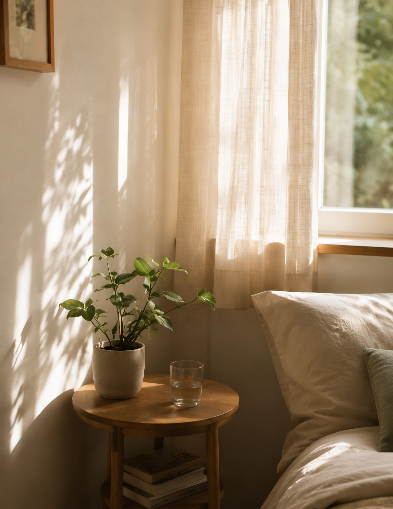
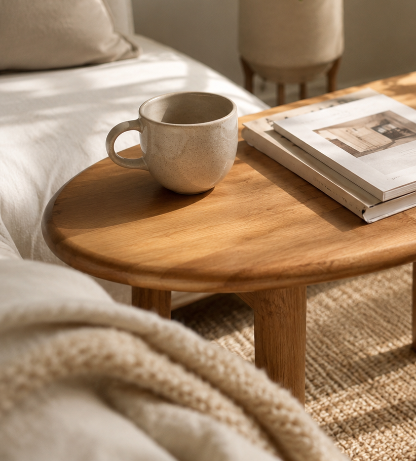
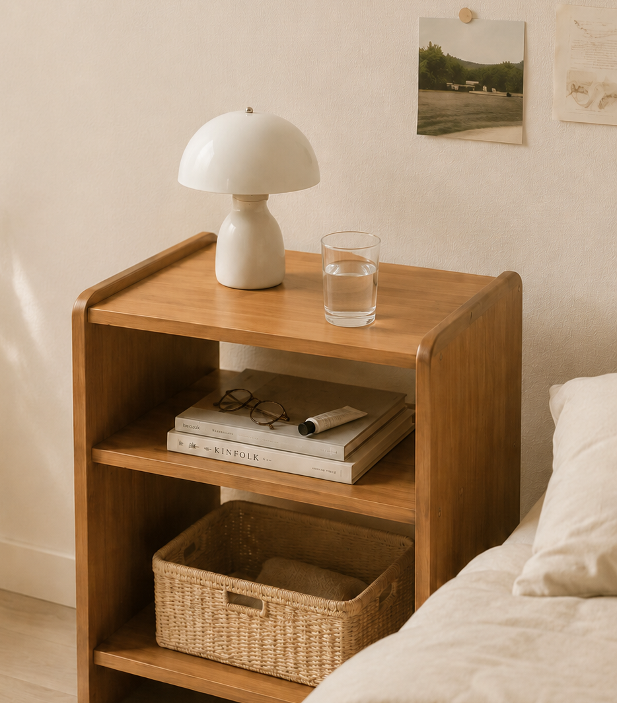
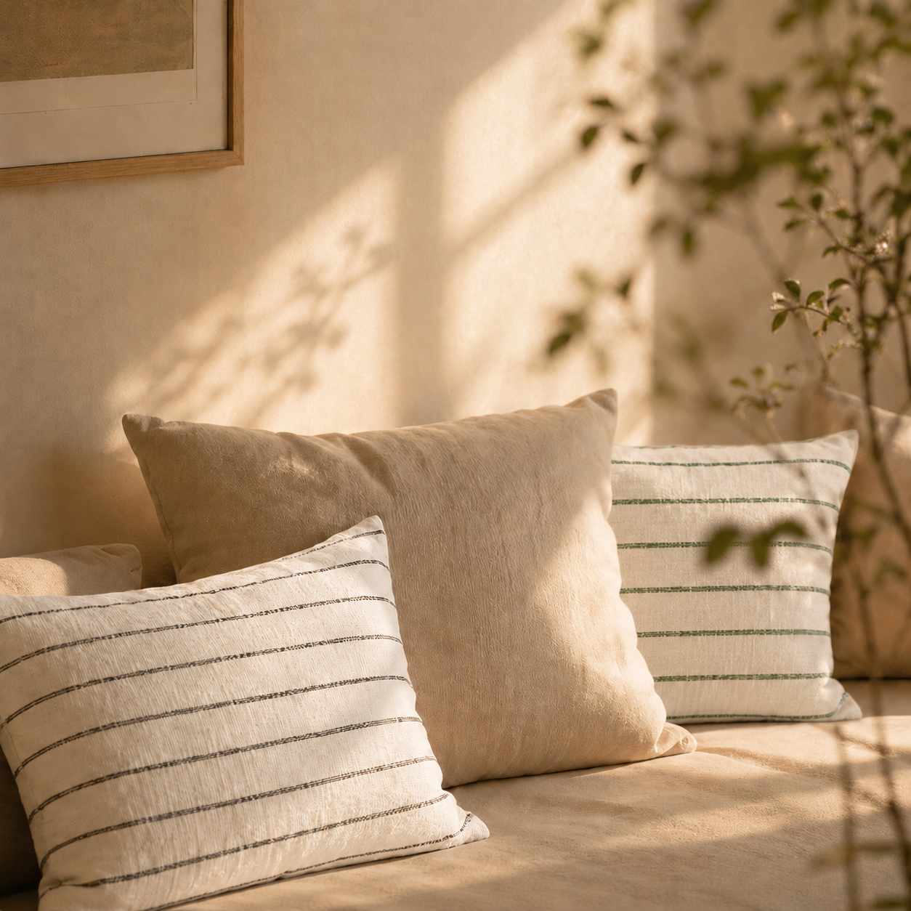
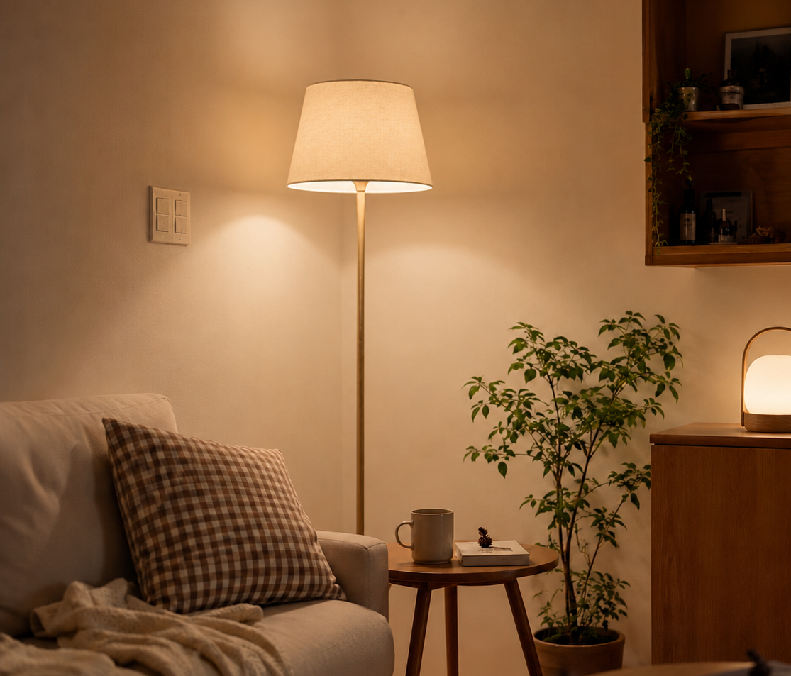
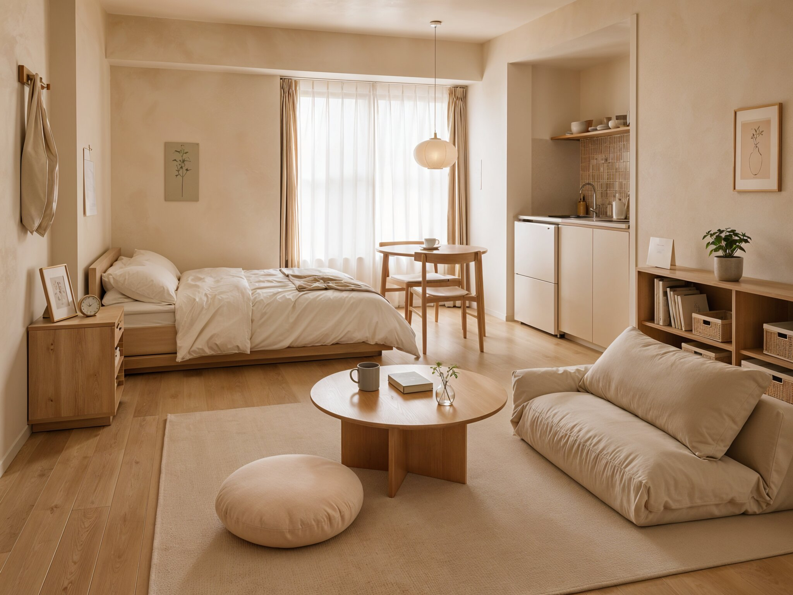

Journal
Nesto가 전하는
일상을 더 편안하게 만드는 작은 영감들.



Styling Tips
오늘의 기분과 계절에 따라, 작은 소품 하나로도 공간은 달라집니다.
Nesto의 쉽게 시도할 수 있는 스타일링 팁을 소개합니다.


조명은 작은 공간의 분위기를 가장 빠르게 바꾸는
요소입니다.
천장 조명이 아닌 낮은 위치에서 은은
하게 퍼지는 빛은
방의 긴장을 풀어주고, 하루의 끝에 머물고 싶은 따뜻한 자리를 만들어줍니다.

우드 톤 가구는 공간의 중심을 따뜻하게 잡아줍니다.
아이보리 패브릭과 유리, 도자기 오브제를 더하면
라탄의 자연스러운 질감까지 어우러져 차분한 깊이가 완성됩니다.
Living Notes
가구는 공간을 채우고,
그 안의 시간은 집의 분위기를 완성합니다.
Nesto가 바라보는 작은 생활의 장면을 전합니다.
small moments
Storage Ideas
작은 공간에서도 필요한 것은 모두 제자리에.
일상생활의 흐름을 방해하지 않는
수납의 방식을 소개합니다.


 @nesto_furniture
@nesto_furniture hello@nesto.com
hello@nesto.com